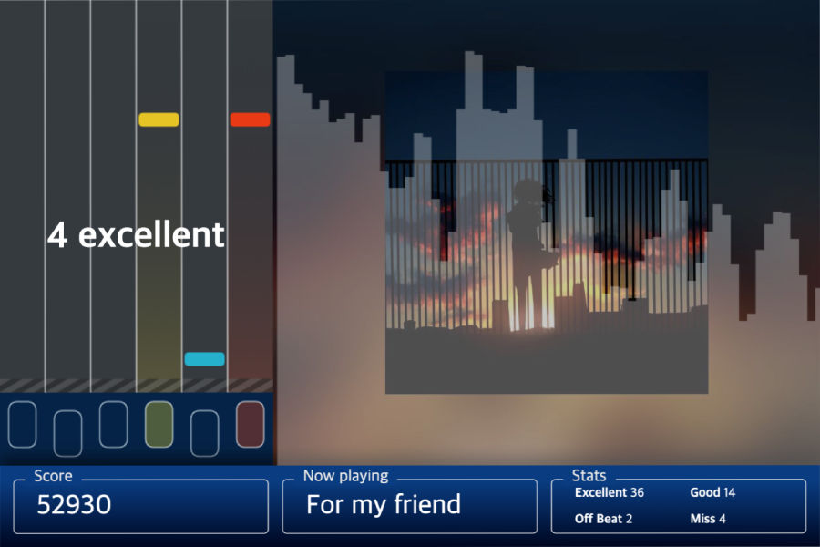
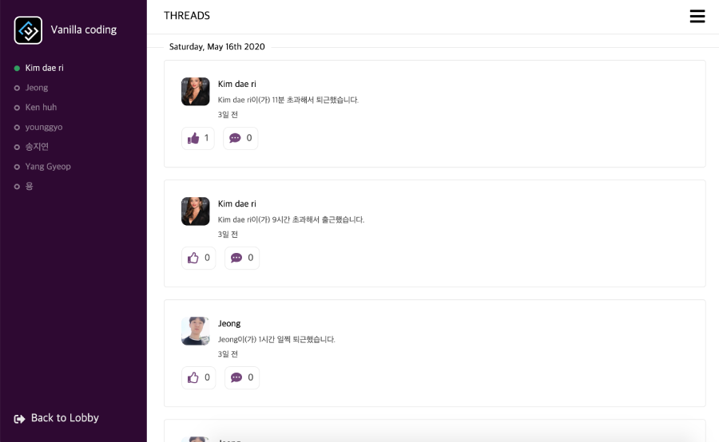

UI/UX Driven Web Developer

O2Damn은 누구나 쉽게 즐길 수 있는 웹 기반 리듬 게임입니다. 키보드 인터페이스 어플리케이션으로 Space bar, ESC, 방향키, S, D, F, J, K, L 를 사용해 조작할 수 있습니다. 음악에 맞춰 내려오는 키노트를 맞춰 높은 점수를 획득하고 점수를 랭크에 등록하세요!

김대리 어딨어는 사내용 출결관리 어플리케이션입니다. 사용자는 팀원 간 출퇴근 현황을 실시간으로 확인 할 수 있습니다. 권한은 일반 사용자와 관리자로 구분되며 팀을 생성한 사용자는 관리자 권한을 부여받습니다. 관리자는 메일을 통해 새로운 멤버를 초대할 수 있고 관리자 페이지에서 팀원의 출퇴근 기록을 자세하게 확인할 수 있습니다. 김대리 어딨어를 통해 누구보다 스마트하게 출결을 관리하세요!